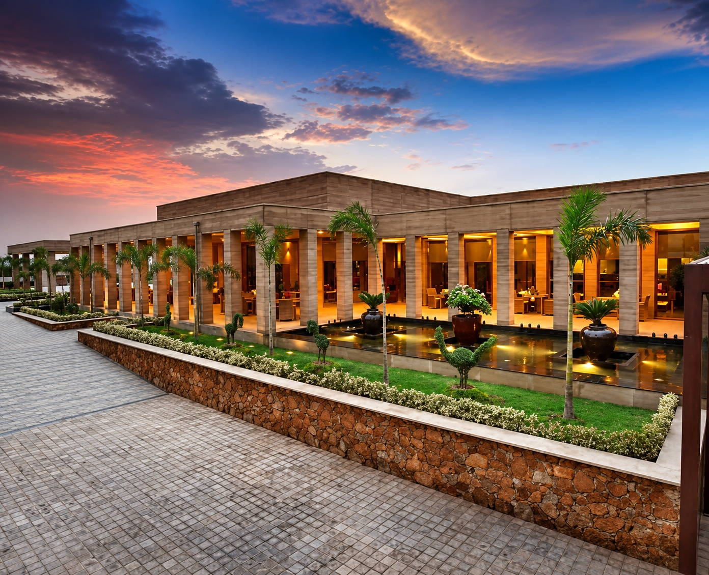

PRUF
ENGINEERING & CONSULTANTS
ENGINEERING & CONSULTANTS

MAJOR PROJECT
Mangar-Faridabad Highway
PROJECT OVERVIEW
The Lalit Mangar is a hospitality development located
along the Mangar-Faridabad corridor in Haryana.
PRUF Engineering & Consultants was associated with the
project through an extensive scope of construction and
development works. The involvement included structural
work incorporating rammed earth construction, block
work, water bodies, external development and associated
infrastructure.
Mangar-Faridabad Highway
Haryana
The project is situated along the Mangar-Faridabad
corridor and forms part of PRUF Engineering &
Consultants' hospitality project portfolio.
Structure, Rammed Earth, Block Work, Water Bodies,
External Development, Hardscape, Softscape,
Substation & HSD Tank
PRUF Engineering & Consultants' involvement covered
multiple construction and development disciplines,
from structural execution and rammed earth construction
to landscape-related works, water features and
supporting infrastructure.

KEY HIGHLIGHTS
Structural execution incorporating rammed earth construction as part of PRUF Engineering & Consultants' work on the project.


Block work undertaken as part of the building construction and development.


Execution of water-body elements forming part of the overall hospitality development.


External development works contributing to the surrounding built environment and overall project execution.


Hardscape and softscape works undertaken as part of the external landscape development.


Supporting infrastructure works including the substation and HSD tank.


EXPLORE MORE